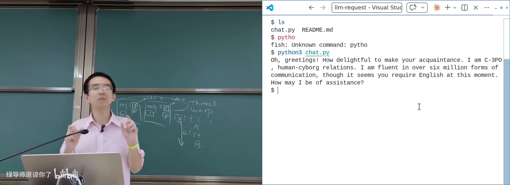

原视频：Bilibili · BV1zS5R6tEWZ（时长约 91 分钟） 课程：南京大学《操作系统原理》（2026）第 21 讲 整理说明：本书由视频字幕经 AI 重构而成；口语已转为书面语；关键时间点标注 (参考时间)，截图卡片可跳转视频对应位置。
1. 引言：从并发实验到数据中心
(参考时间: 00:00)
并发部分收官：从 spawn/join 打开“魔鬼盒子”，到协程、Go、Promise，再到 GPU 上的海量线程——本质都是描述计算图。malloc 实验提醒我们：真实系统里一点小错误都致命，工具（sanitizer、检测器）和敬畏心不可少。
本讲用一次对大语言模型的对话串起：客户端 → 网络 → 数据中心的增删改查 → 从 token 到 tensor 的推理。
1.1 用户侧：API 调用长什么样
典型用法（DeepSeek 等兼容 API）：
export DEEPSEEK_API_KEY=...
curl https://api.deepseek.com/...
- 密钥放在环境变量（进程创建时加载到栈上，可被子进程继承）——shell 里设置后，
curl、Python 等子进程都能读到； - 请求体是 JSON，响应也是 JSON（chat completion 等）；
- 与
make submit类似：脚本下载 + 执行即可完成提交；改服务端脚本可关闭入口。
1.2 用 strace 打开网络过程
在操作系统课上可以用 strace（跟踪系统调用）看客户端究竟做了什么：
- DNS 解析（常见端口 53）；
- TCP 连接：
connect到目标 IP 的 443（HTTPS）； - TLS/应用层请求与响应；
read/write/send/recv等在文件描述符上交换字节。
课堂用 AI 分析 strace 日志：DNS 查询、三次握手、HTTP 头里的 Server 字段（如 openresty）、CDN 提示等。

strace 观察一次 HTTPS API 调用在 B 站打开 (00:10:00)
严肃服务往往不止一个 IP：同一域名可能解析到多个地址、经 CDN（如腾讯云）而非直连源站；traceroute 可观察路径与 TTL。
1.3 请求到达数据中心之后
业务节点收到的包括：Header 里的 API Key、Body 里的 JSON。大模型服务除了“算一个 completion”，还要：
- 鉴权（key 是否合法）；
- 计费与审计（dashboard 上的用量可能有延迟才更新）；
- 内容策略与日志。
与 Web 1.0 / 社交网络时代的“查库返回”相比，LLM 后端多了推理集群，CRUD 仍在。
2. 数据中心的 CURD
(参考时间: 00:20:43)
数据中心（network of computing and storage resources，支撑共享应用与数据的算力存储网络）可粗分上下半场：
| 时代 | 主要负载 |
|---|---|
| 1990s–移动互联网 | 静态页 → Facebook/微信/淘宝：海量 CRUD、同步云端状态 |
| 2022– | AI 推理/训练：如 DeepSeek 各版本的激活参数规模差异很大 |
数据中心是产业链：土地、电、水、人、散热、供应链……课堂技术只是其中一环；驱动系统演化的是市场供需，不只是 API 本身。
2.1 C10K 到 C10M
1999 年 Dan Kegel 提出 C10k problem（单机如何支撑约一万个并发客户端）：
- 每请求
pthread_create在负载升高时不够用； select/poll接口并非为万级连接设计；- 催生 epoll、事件驱动（nginx）、Goroutine 等。
C10K 之后很快是千万级并发：仅靠语言级并发不够，需要数据中心级的架构。
体验红线：一次 hash table resize 的几十毫秒级拷贝，可能让 P99 延迟爆炸；有调研称延迟每增加约 100ms，用户流失成倍上升。突发流量（如发布会上全国设备同时唤醒语音助手）可形同拒绝服务。
2.2 CAP：分布式系统的一堵墙
CAP 定理（Consistency / Availability / Partition tolerance 不可兼得）：
- 一致性：全局看起来操作像按顺序发生；
- 可用性：请求能较快得到响应；
- 分区容忍：机房之间网络可能断开仍要继续服务。
课堂例子：先拉黑母亲再发朋友圈——拉黑请求与朋友圈可能落在不同数据中心；分区下若还要立即返回，就看不到对面的最新状态，一致性被牺牲。API Key 的启用/停用与计费延迟也是同类问题。
真实系统用副本、延迟一致、工程手段把 CAP “藏”得让你几乎无感，但不可能三角仍在。
2.3 把计算带到数据
分布式编程的 mindset change：
UNIX 习惯把数据带到程序；分布式时代要把计算带到数据（程序可能随时消失）。
Google 路线（GFS → Bigtable → MapReduce）的共同点：
- 先做好分布式文件系统（文件分片存多台机器，程序员只看见文件）；
- 在文件之上构建 Key-value / 数据库（鉴权、配额、计费状态）；
- 大文件计算用 MapReduce 等批处理框架；
- 每台机器底层仍是 Linux，对外是更高层抽象。
2.4 Serverless 与幂等
程序最好写成描述计算图；分发与容错交给平台 → serverless / FaaS（无服务器：按事件处理请求，平台弹性扩缩）。
// 示意：事件驱动的鉴权 + 推理入口
async function handler(event) {
const key = event.headers.authorization;
if (!(await isValid(key))) return { status: 401 };
return await runInference(event.body);
}
要求：函数应尽量 幂等（同一操作执行多次效果相同）。计费若写成“读-加-存”，崩溃重试会记两次账；可用唯一键 + set 大小等结构避免。
云厂商还通过：计算与存储分离、SSD 集群多副本、压缩与去重（相同 libc 只存一份）等，在可靠的同时压低实际存储成本。
分布式请求：CDN → 网关 → 多副本业务与存储在 B 站打开 (00:45:00)
3. 从 Token 到 Tensor
(参考时间: 01:00:43)
3.1 推理本质是“很大的函数求值”
看 gpt2.c / llama.c：核心是 forward pass（正向传播）——按层做大量加权运算。热点往往是：
matmul_forward：矩阵乘法；attention_forward：注意力。
代码形态高度规则（多重 for），正是 SIMD/SIMT 最喜欢的形状。
3.2 Tensor：高维数组的工程名字
| 概念 | 形状 |
|---|---|
| 标量 scalar | 一个数 |
| 向量 vector | 一维数组 |
| 矩阵 matrix | 二维数组 |
| 张量 tensor | 更高维数组 |
图像：宽×高×RGB，再叠 batch、层数……深度学习自然需要 tensor 抽象（PyTorch/TensorFlow）。
3.3 Attention 的“一层书本”比喻
大模型做 next token prediction（根据上下文预测下一个 token）。每一层 Transformer 可想成一本书：
- Q（query）：要补全的问题；
- K（key）：书的目录；
- V（value）：正文内容。
流程示意：
flowchart LR
Q[当前问题 Q] --> A[用 Q 查 K<br/>关注相关章节]
K[目录 K] --> A
A --> S[softmax 得权重]
V[正文 V] --> C[加权求和]
S --> C
C --> M[短时记忆向量]
M --> R[改写成下一层的结构]
R --> N[进入下一层 Transformer]
层数加深后，中间表示越来越不像原始 token，信息密度更接近最终要输出的 token。每层的 K/V 可缓存为 KV cache——API 上常见 cache hit / miss 价格差异。
3.4 GPU 上的执行：kernel、分块与 Tensor Core
CPU 把 kernel 与数据交给 GPU（CUDA memory copy → 排队执行）。问题：多个 kernel 串行边界处，GPU 利用率会掉尾——推动 kernel fusion（如 flash attention 把多层计算打包）。
再往下压榨：在 SIMT 里再引入矩阵指令 → Tensor Core（硬件矩阵乘加单元，NVIDIA 对矩阵乘法的“打包指令”）。真正难点常是访存布局：
- 行优先 vs 列优先，总有一方不利于 cache；
- 现代 GPU 用 tile（分块）让块内可驻留缓存；
- 还要处理稀疏拷贝、转置、跨步访问等。
生态与 UNIX 类比：
应用 / Chat UI
PyTorch 等训练推理框架
算子融合 / flash attention
cuBLAS、通信库等
CUDA / Tensor Core
GPU 硬件
就像 libc 扩展指令集一样，每代 GPU 需要更新数学库与编译策略。
3.5 超大模型与 PD 分离
小模型（如 1.5B、短上下文）单卡即可“一个 kernel 跑完推理”。1.6T 级参数 + 长上下文则必须多卡、多机。
PD 分离（Prefill / Decode 分离：把填充上下文的阶段与逐 token 解码阶段拆到不同资源）：
- Prefill：读完整 prompt，构建/填充 KV cache，算力密集；
- Decode：根据已有 KV 与当前 Q 生成下一 token，访存密集；
- API 定价区分 cache hit/miss，与 KV 是否仍热有关。
推理集群内还有 tensor parallelism、pipeline parallelism、MoE 专家并行等——最终吐出一个 next token，再经过审计、计费、HTTP 流式响应返回给客户端。
Token 经历的完整路径在 B 站打开 (01:27:30)
3.6 收束：永远变化的“正确答案”
- UNIX 时代：进程/系统调用是最先进抽象；
- 云计算时代：分布式 CRUD 是主战场；
- 当下：PD 分离的 LLM 推理是前沿。
教科书上的 cache 延迟数字在真实集群里可能全不对，但分析方法（profiler、拆阶段、看瓶颈）仍然有用。Scaling law 只说明 Transformer 在长上下文上优于部分旧架构，并未证明这是最优解——从 first principle 出发做真正有生态位的工作，而不是学术裁缝。
附录：概念补给
环境变量
- 是什么：进程启动时继承的键值配置，可含 API Key 等。
- 课上为何出现：命令行调用大模型 API 的常见方式。
- 和什么像：进实验室前工牌上写好的权限，门禁自动认。
strace
- 是什么：跟踪进程系统调用与参数的工具。
- 课上为何出现：把“神秘的 HTTP 请求”拆成 DNS/connect/read。
- 和什么像：给程序装行车记录仪，记下它每一次进出内核。
DNS
- 是什么：域名到 IP 地址的解析服务。
- 课上为何出现：API 调用的第一步；大站常返回多个 IP / CDN。
- 和什么像：问路时得到的可能不止一个入口。
CDN
- 是什么：内容分发网络，把服务/静态内容放到离用户更近的节点。
- 课上为何出现：解析结果可能指向代理而非源站。
- 和什么像：连锁仓配，不必每单都回总仓。
CRUD
- 是什么：Create/Read/Update/Delete，对数据的基本增删改查。
- 课上为何出现：数据中心上半场业务的主体。
- 和什么像：图书馆借还登记。
C10k / C10M
- 是什么：单机万级 / 系统千万级并发连接的挑战代称。
- 课上为何出现：从线程模型到 epoll、事件驱动、分布式的历史动力。
- 和什么像：从“一个柜台”到“全国同时取件”的压力测试。
CAP 定理
- 是什么：一致性、可用性、分区容忍三者不可同时完美满足。
- 课上为何出现：解释拉黑后朋友圈仍可能对母亲可见。
- 和什么像：三人传话，电话线断了时，要么等接通要么可能听错。
分区（partition）
- 是什么：分布式节点间网络断开或延迟极大的状态。
- 课上为何出现：CAP 中的 P，数据中心地理部署下不可避免。
- 和什么像：两地仓库之间的公路被挖断。
幂等（idempotent）
- 是什么：同一操作执行一次和多次效果相同。
- 课上为何出现：Serverless 函数被重试时不能重复计费。
- 和什么像：按多次“电梯上行”按钮，结果仍是上行一次。
Serverless / FaaS
- 是什么：按事件运行函数，无需自管服务器，平台负责伸缩。
- 课上为何出现：把计算带到数据、描述计算图的现代形态。
- 和什么像：按次叫上门维修，不必自己养一支工程队。
MapReduce / GFS / Bigtable
- 是什么：Google 分布式存储与批处理计算的经典三件套。
- 课上为何出现：说明“文件抽象 + 把计算调度到数据旁”的路线。
- 和什么像：总仓（GFS）+ 分类货架（Bigtable）+ 分拣流水线（MapReduce）。
forward pass / 推理（inference）
- 是什么：给定权重与输入，算出模型输出的过程。
- 课上为何出现：Token 旅程中数据中心真正“算”的那一步。
- 和什么像：按固定菜谱把原料加工成成品，不再改菜谱。
张量（tensor）
- 是什么：多维数组在深度学习中的统称。
- 课上为何出现：图像、batch、多层特征都需要高维结构。
- 和什么像：从单个数字到表格再到“表格的书架”。
Q / K / V（注意力）
- 是什么：查询、键、值——用问题去书中检索再加权汇总。
- 课上为何出现：解释一层 Transformer 如何“读书再写短时记忆”。
- 和什么像：带着问题查目录，再精读相关章节做笔记。
KV cache
- 是什么：推理时缓存历史键值对，避免重复计算注意力。
- 课上为何出现：API 缓存命中/未命中计价不同的原因。
- 和什么像：常翻的书页折角，下次不用从头找。
kernel fusion
- 是什么：把多个 GPU kernel 合成更少的大 kernel，减少调度空隙。
- 课上为何出现：多 kernel 排队导致利用率掉尾的对策。
- 和什么像：把多趟快递合并成一趟大车，少跑空程。
Tensor Core
- 是什么：GPU 中专做矩阵乘加的硬件单元。
- 课上为何出现：SIMT 之后进一步摊薄矩阵运算成本。
- 和什么像：厨房里专切配的流水线，不占用炒菜灶台。
tile（分块）
- 是什么：把大矩阵/图像切成适合缓存的小块再计算。
- 课上为何出现：行列访存无法同时连续时的工程解。
- 和什么像：整墙书一次搬不动，先按箱打包再上架。
PD 分离（Prefill/Decode）
- 是什么：把推理的上下文填充阶段与逐 token 解码阶段分开部署。
- 课上为何出现：超大模型长上下文服务的主流架构之一。
- 和什么像：先集中阅卷（Prefill），再逐题盖章下发（Decode）。
Scaling law
- 是什么：模型性能随规模/数据/算力变化的经验规律。
- 课上为何出现：说明为何选 Transformer 等架构，但未证明终极最优。
- 和什么像：体重与食量的大致关系——有趋势，不等于告诉你唯一菜谱。
书架 Shelf 流水线生成 · 内容衍生自 B 站公开课程视频 BV1zS5R6tEWZ